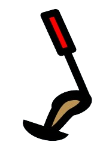
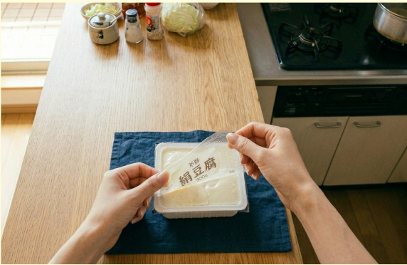
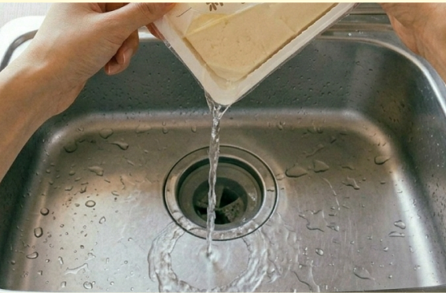
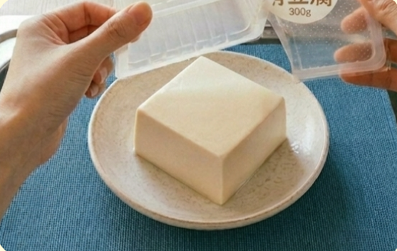
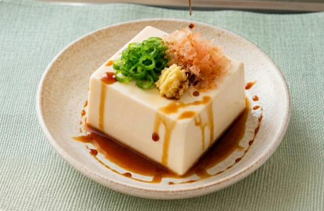

難易度1 ★☆☆
材料（一人分）
- ・豆腐１丁
- ・しょうゆ適量
- ・薬味適量
必要な道具
- ・お皿
- ・小皿
- ・箸
注目ポイント
- 火を使わない
- 包丁を使わない

５分以内に完成
作り方
① 豆腐のパックをゆっくり開けます。 パックの中には水が入っているので、 こぼさないように気を付けましょう。

② パックの端から水をシンクへゆっくり流します。 豆腐を落とさないように気を付けましょう。

③ パックを逆さにして、お皿の上にそっと出します。 出にくいときは底を軽く押すと出しやすくなります。

④ しょうゆをかけます。 お好みでねぎ・しょうが・かつお節などをのせたら完成です。

豆腐の扱い方
パックから勢いよく出すのはやめましょう。
豆腐はとてもやわらかいので、高いところから落とすと崩れてしまいます。
お皿をパックのすぐ下に置いて、そっと出しましょう。
もっと美味しい
時間があれば、豆腐をお皿に出して5〜10分ほど置くと水切りができます。
水分が減ることで、しょうゆや薬味の風味がより引き立ちます。